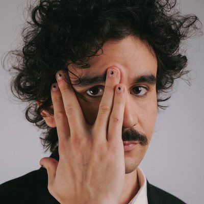
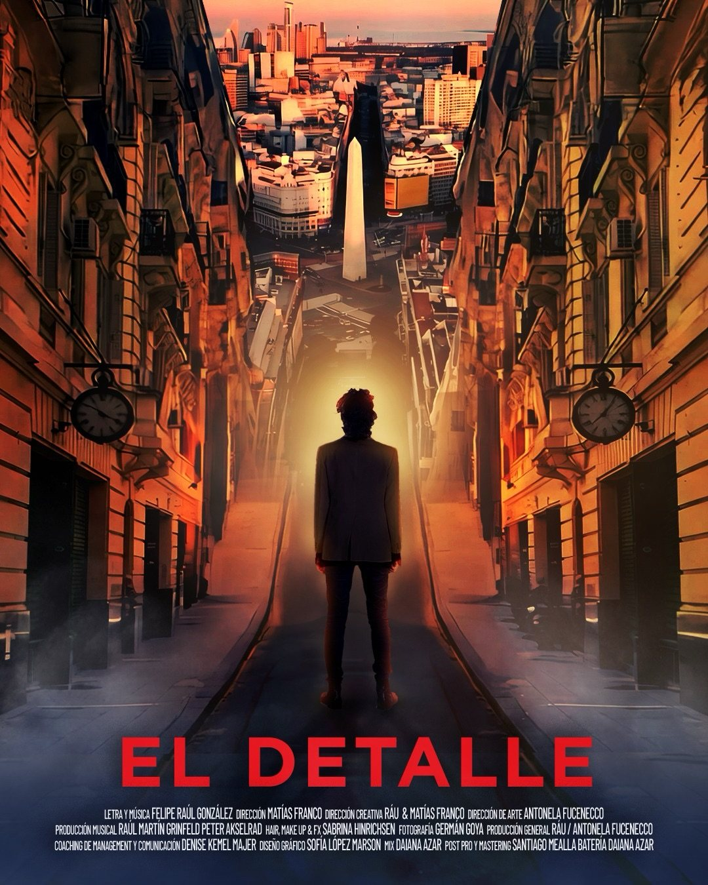
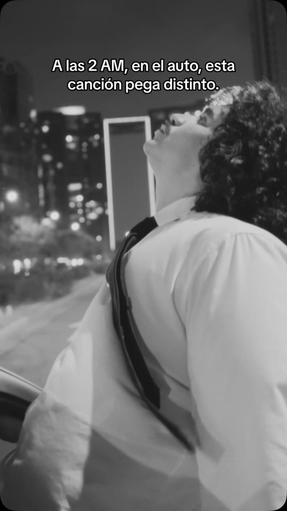
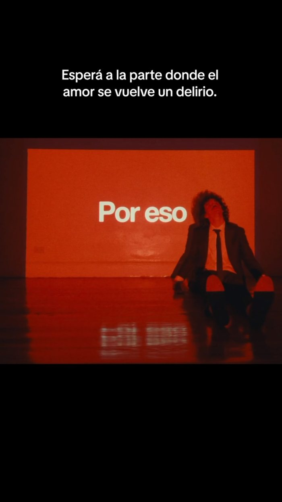
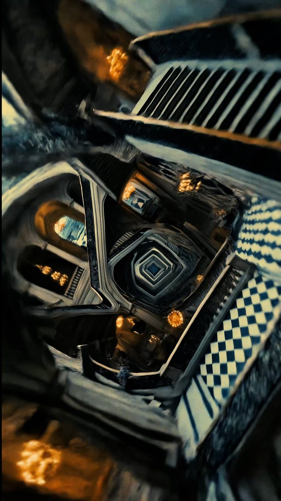
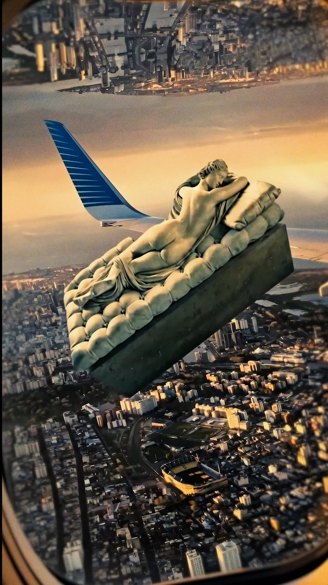
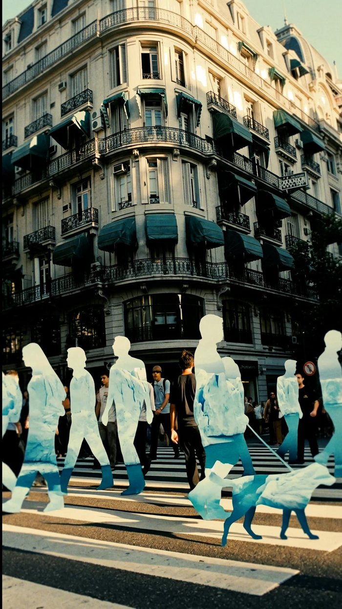

Alt-pop · Producción · Buenos Aires
Canciones para las 2 AM, para el que se fue y para el que todavía no se puede dejar de extrañar.
Más de 20.000 oyentes mensuales en Spotify · @raumusica en Instagram

Lo nuevo
El single nuevo de RÁU: una canción sobre el amor que se vuelve delirio, con lyric video, visualizer y una estética que es Inception en Buenos Aires. Mejor con auriculares.
Música
Alt-pop producido por él mismo, de principio a fin.


Sobre RÁU
Artista de alt-pop y productor musical. Escribe, graba y produce sus propias canciones desde Buenos Aires.
Sus canciones hablan del amor, de los mensajes de las 2 AM y de esa persona a la que no se puede no extrañar. Cada lanzamiento llega con un universo visual propio: lyric videos, visualizers y una estética cinematográfica donde Buenos Aires se da vuelta como en un sueño.
Un lenguaje que hace que las canciones sean canciones.
Universo visual



En vivo
Shows, presentaciones y sesiones.
Pronto nuevas fechas.
Contacto
Para shows, prensa y colaboraciones, escribile por Instagram.